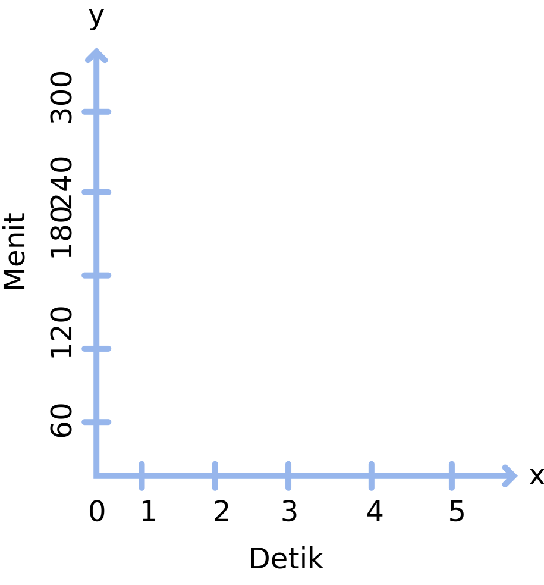
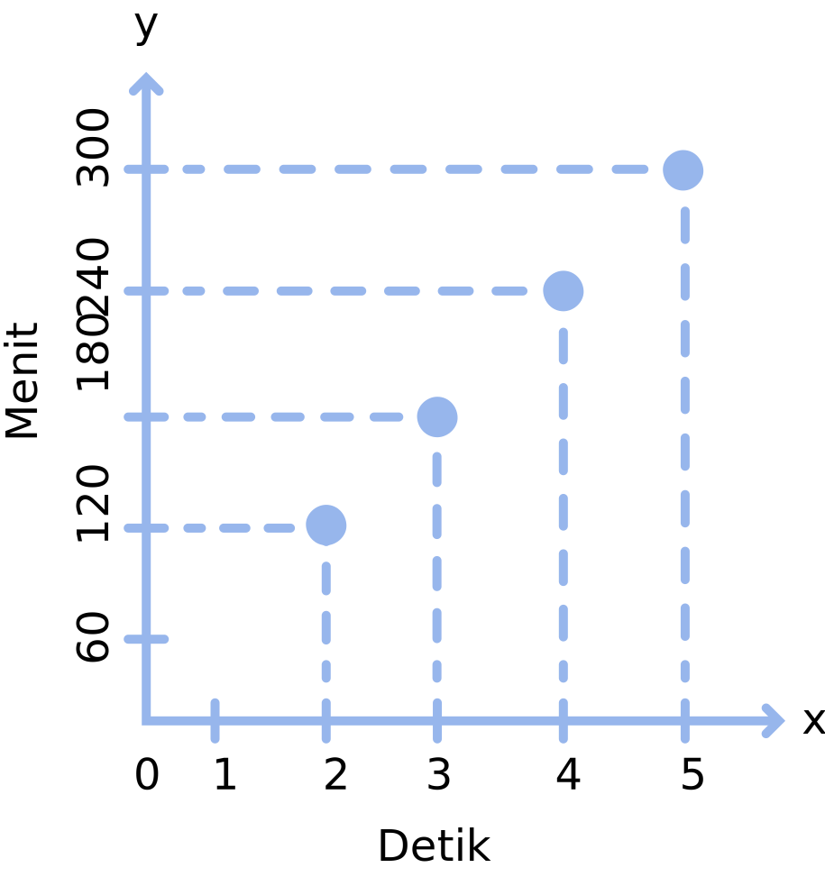
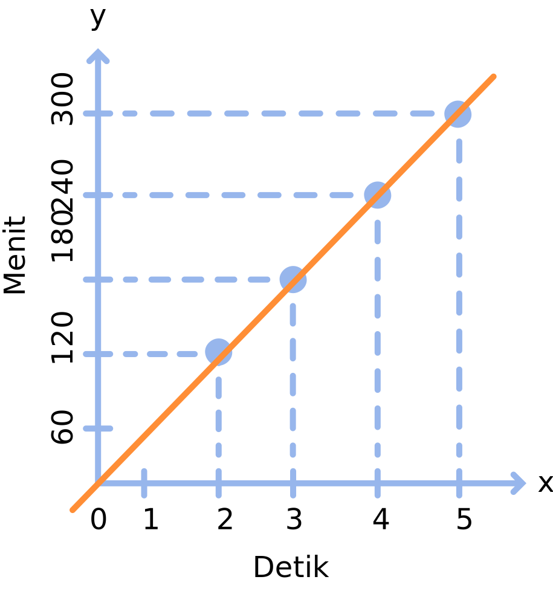
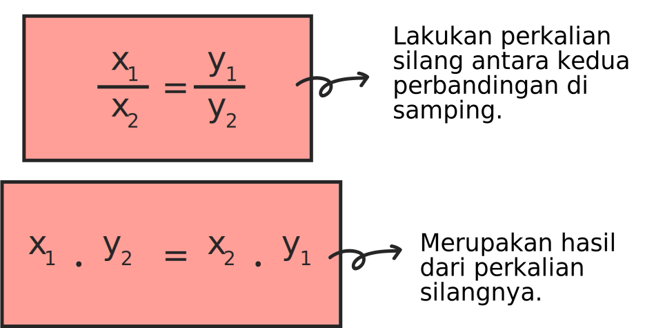

Apakah kalian mempunyai jam dinding di rumah? Jika iya, coba perhatikan jumlah jarum pada jam tersebut. Umumnya, jumlah jarum pada jam ada tiga, yaitu: jarum pendek, jarum panjang dengan bentuk tebal dan jarum panjang dengan bentuk yang lebih tipis. Jarum pendek menunjukkan pergantian jam, jarum panjang tebal menunjukkan pergantian menit dan jarum panjang tipis menunjukkan pergantian detiknya.
Jika kalian memperhatikan secara seksama, biasanya setiap pergantian satu menit membutuhkan 60 kali perpindahan pada jarum pergantian detiknya. Berarti, jika kita simpulkan, maka setiap 1 menit menghasilkan 60 detik, bukan? Lalu, untuk 2 menit menghasilkan 120 detik dan seterusnya.
Dari ilustrasi singkat di atas bisa kita tarik kesimpulan bahwa, semakin bertambah menit, maka bertambah pula jumlah detiknya. Hal ini jelas berhubungan dengan perbandingan senilai, yang mana perbandingan senilai adalah jika nilai di awal besar, maka nilai di akhir juga akan semakin besar. Begitu pula sebaliknya, jika nilai di awal kecil, maka nilai di akhir juga semakin kecil. Jika dimisalkan, a memiliki nilai berupa x dan b memiliki nilai berupa y. Maka, jika nilai pada a besar, maka nilai pada b juga akan semakin besar, begitu pula sebaliknya. Berikut adalah bentuk persamaannya:
$$\frac{a}{b}=\frac{x}{y} \iff ay = bx$$
Dalam pengertian lainnya, perbandingan senilai merupakan perbandingan yang mempunyai nilai sama. Artinya, jika a∶b adalah perbandingan senilai, maka a∶b akan memiliki nilai yang sama, anggaplah nilainya adalah c. Perbandingan senilai juga disebut dengan proporsi. Dalam menentukan perbandingan senilai, ada 3 cara yang bisa dilakukan yaitu: menggunakan tabel, menggunakan grafik dan menggunakan persamaan. Penjelasan selengkapnya, yuk baca lagi pada bagian di bawah ini!
1. Perbandingan Senilai dalam Bentuk Tabel
Agar lebih mudah, kita coba mengambil kasus dari ilustrasi sebelumnya, untuk dicari tahu penyelesainnya dalam bentuk tabel. Dengan mengikuti petunjuk bahwa 1 menit akan menghasilkan 60 detik dan semakin bertambah menit, maka bertambah pula jumlah detiknya. Artinya, setiap pertambahan satu menitnya, tambahkan jumlah detik sebelumnya sebanyak 60 menit. Berikut adalah tabel yang bisa kita sajikan untuk 1 hingga 5 menitnya:
Jumlah Menit
Jumlah Detik
Hasil Perbandingan
1
60
1 : 60 = 60
2
120
2 : 120 = 60
3
180
3 : 180 = 6
4
240
4 : 240 = 60
5
300
5 : 300 = 60
Jika kalian perhatikan kembali, pada menit ke-2 jumlah detiknya bertambah menjadi 120 detik. Lalu pada menit ke-3, jumlah detiknya bertambah menjadi 180 detik dan begitupula untuk menit seterusnya. Akan selalu ada pertambahan jumlah detik sebanyak 60 detik.
Dari tabel di atas, yang bisa kita simpulkan adalah ketika jumlah detik dibagi dengan jumlah menit, maka akan selalu menghasilkan nilai yang sama yaitu 60. Nah, dari tabel di atas pula kita bisa mengetahui secara jelas bahwa perbandingan tersebut merupakan perbandingan senilai karena selalu menghasilkan nilai yang sama.
2. Perbandingan Senilai dalam Bentuk Grafik
Selain menggunakan tabel, perbandingan senilai juga bisa dibuat dalam bentuk grafik. Berdasarkan tabel perbandingan antara jumlah menit dan jumlah detik sebelumnya, kita dapat menggunakannya untuk membuat grafik perbandingan senilai dan berikut ini adalah tahapannya:
a. Untuk memudahkan kalian, terlebih dahulu buatlah tabel perbandingan senilainya. Cara membuat tabel perbandingan senilai sebelumnya sudah dibahas pada bagian pertama.
b. Selanjutnya, setelah membuat tabel perbandingan, buatlah grafik kartesius. Sumbu horizontal (x) kita anggap sebagai jumlah menitnya, lalu pada sumbu vertikal (y) anggap sebagai jumlah detiknya. Masukkan data yang sudah didapatkan pada tabel sebelumnya seperti yang terlihat pada grafik di bawah ini:

c. Buatlah pasangan titik koordinatnya berdasarkan data pada tabel. Misal, koordinat (1, 60), (2, 120), (3, 180), dan seterusnya. Lalu hubungkan kedua titiknya menggunakan garis putus-putus.

d. Setelah itu, tariklah garis di setiap titik pertemuan koordinatnya. Grafik di samping menghasilkan garis lurus. Hal ini menunjukkan bahwa, perbandingan senilai jika dibuat dalam bentuk grafik akan menghasilkan bentuk berupa garis lurus.
 3. Perbandingan Senilai dalam Bentuk Persamaan
Perbandingan senilai dalam bentuk persamaan dapat dinyatakan dalam bentuk berikut:
$$\frac{x_1}{x_2}=\frac{y_1}{y_2}$$
Jika disederhanakan, maka akan menjadi seperti ini :

Agar kamu bisa lebih memahami materi di atas, ayo perhatikan contoh soal pada bagian "Contoh Soal". Untuk melanjutkan pada bagian "Contoh Soal", silakan klik halaman atau tombol .